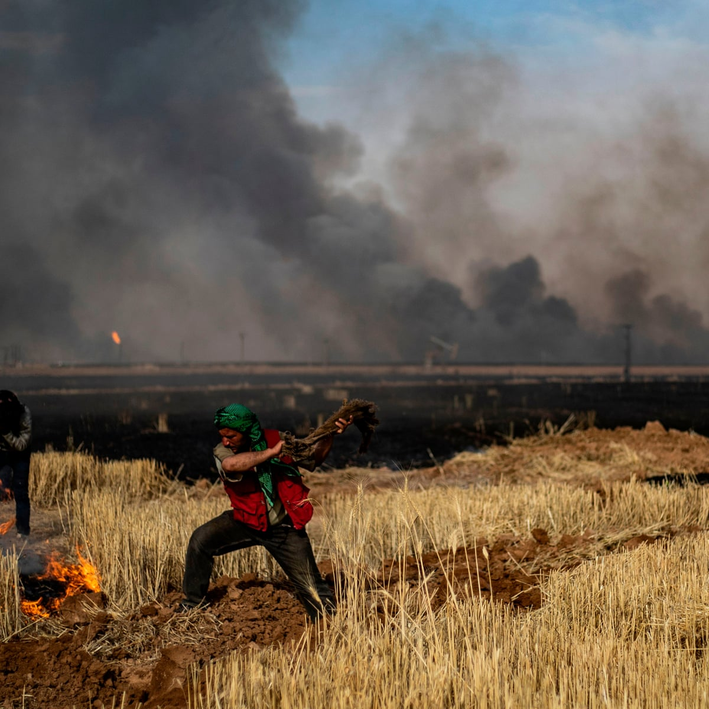

when we look at the nature , we see ourselves
The natural world is an incredible wonder that inspires us all. It underpins our economy, our society, indeed our very existence. Our forests, rivers, oceans and soils provide us with the food we eat, the air we breathe, the water we irrigate our crops with. We also rely on them for numerous other goods and services we depend on for our health, happiness and prosperity. These natural assets are often called the world's 'natural capital'. These benefits are also hugely important to the economy – from farming and forestry to leisure and tourism. If you add them all up, the total value of these benefits is phenomenal – at least US$125 trillion every year.
Our team volunteered to make w website that only aims on protecting the environment by reducing the amount the air pollution caused by factories. We're going to help investors and factory builder's to choose the best possible locations and work schedule for their factory ,Which will benefit investors, people and nature
People and nature are two things that complete each other, both protect the other and preserve its life and beauty.
Apart from climate change, the main threat to nature starts with habitat loss. This is the number one threat to the diversity of species and to the healthy functioning of the natural systems we rely on for water, food, materials and more of the things we often take for granted.

Deforestation and the conversion of wild spaces for human food production have largely been blamed for the destruction of Earth's web of life. The report highlights that 75% of the Earth's ice-free land has been significantly altered by human activity, and almost 90% of global wetlands have been lost since 1700.
Burning fossil fuels releases gases and chemicals into the air.” And in an especially destructive feedback loop, air pollution not only contributes to climate change but is also exacerbated by it. “Air pollution in the form of carbon dioxide and methane raises the earth's temperature,” Walke says.
the main reason of air pollution in Syria in 2020 is fires ,According to official statistics issued by the Ministry of Agriculture on October 20, 252 villages were affected as a result of the fires that broke out in those governorates, in addition to the fires that occurred in the Al-Ghab area in the countryside of Hama last September. The ministry said that the number of damaged fruit trees reached two million and 100,000 trees. The statistics include the fires that broke out during the period between October 8 and 12, which the Ministry of Interior announced the arrest of a group of 39 people it said deliberately set those fires with support and funding from "external parties", in addition to 48 officers organized by the Ministry of Agriculture for forest fires resulting from " Agricultural fire. "
